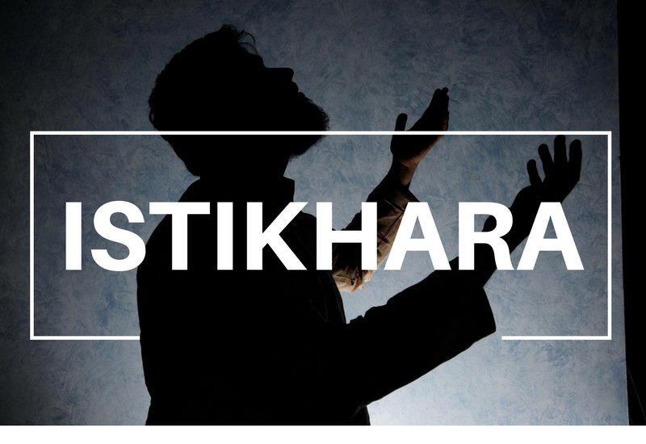

IstikharaIslamic
Home
About
Articles
What is Istikhara?
istikhara for marriage
Istikhara results
Conditions for Istikhara
The Hijab
Islamic Art
Istikhara in Islam
Istikhara in Arab
Specific Region
Health Decisions
Istikhara
slamic health
Istikhara for marriage
Istikhara verses
Trust in Allah
Contact US
اسلام و علیکم میری بہنوں بھائیوں اگر آپ پر کسی نے جادو ٹونہ اور تعویزات کر دیئے ہے اور آپ اس وجہ سے زندگی میں پریشان ہے تو پریشان ہونا چھوڑیں ابھی ہرقسم کے مسائل کا حل اسلامی طریقے سے فی سبیل اللہ کروائیں۔

#Istikhara
#Health decisions
#Spiritual guidance
#Faith and health
#Islamic perspective on health
#Seeking Allah's guidance
#Prayer for health decisions
#Trust in Allah
#Well-being in Islam
#Integrative medicine in Islam
#Spiritual healing
#Patience in health choices
#Quranic verses on health
#Hadiths on well-being
#Istikhara process
#Healing prayers
#Islamic medicine
#Holistic health in Islam
#Faith-based decision-making
#Divine intervention in health
#Dua for good health
#Seeking guidance in illness
#Emotional well-being in Islam
#Acceptance in health challenges
#Virtue of patience in health
#Islamic ethics in healthcare
#Connecting spirituality and health
#Mind-body connection in Islam
#Balancing medical decisions with faith
#Faithful approach to medical treatment
#Islamic bioethics
#Quranic remedies for ailments
#Natural healing in Islam
#Fasting and health decisions
#Prayer and healing
#Healthy lifestyle in Islam
#Holistic approach to health
#Spiritual well-being
#Istikhara and mental health
#Guidance for medical dilemmas
#Islamic dietary guidelines
#Gratitude for health
#Prevention in Islamic medicine
#Tawakkul (reliance on Allah) in health choices
#Istishara (seeking advice) in health decisions
#Healing rituals in Islam
#Tafsir (interpretation) of health-related verses
#Islamic rituals for well-being
#Salah (prayer) and health
#Wholeness in Islamic philosophy
#Islamic teachings on sickness
#Spiritual resilience in health challenges
#Faith and medical ethics
#Health awareness in Islam
#Divine wisdom in health outcomes
#Seeking Barakah (blessings) in health choices
#Sadaqah (charity) for health
#Fiqh (jurisprudence) of health decisions
#Islamic teachings on caregiving
#Islamic healing practices
#Connecting with Allah in illness
#Gratitude for health blessings
#Seeking forgiveness for health mistakes
#Dua for health protection
#Istikhara and medical consultations
#Guidance for chronic illnesses
#Coping with health challenges through faith
#Dua for medical professionals
#Relying on Allah's mercy in health matters
#Wellness through Islamic practices
#Connecting with the Quran for health decisions
#Tazkiyah (purification) and health
#Virtues of cleanliness in Islam
#Seeking Barakah in medication
#Virtues of water in Islamic health
#Gratitude for healing moments
#Reflection on health choices
#Acceptance in health outcomes
#Spiritual discipline in health
#Fasting and detoxification in Islam
#Dua for quick recovery
#Seeking patience in prolonged illnesses
#Gratitude for pain and healing lessons
#Physical and spiritual nourishment
#Sujood (prostration) and well-being
#Faithful decision-making in health crises
#Praying for health research and advancements
#Seeking forgiveness for neglecting health
#Balancing Western and Islamic medicine
#Dua for health breakthroughs
#Virtues of herbal remedies in Islam
#Practicing self-compassion in health
#Virtues of sleep in Islamic health
#Seeking forgiveness for unhealthy habits
#Gratitude for the body as an amanah (trust)
#Dua for protection from diseases
#Islamic teachings on exercise
#Seeking Barakah in medical treatments
#Dua for health and vitality
#Virtues of seeking knowledge for health.